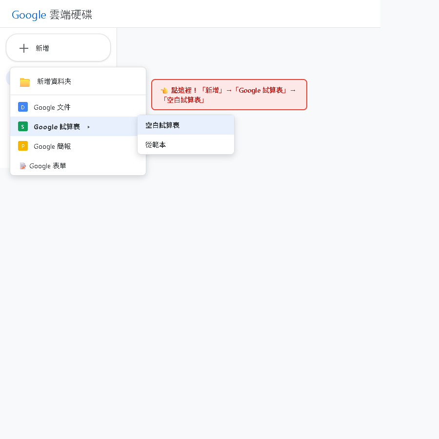
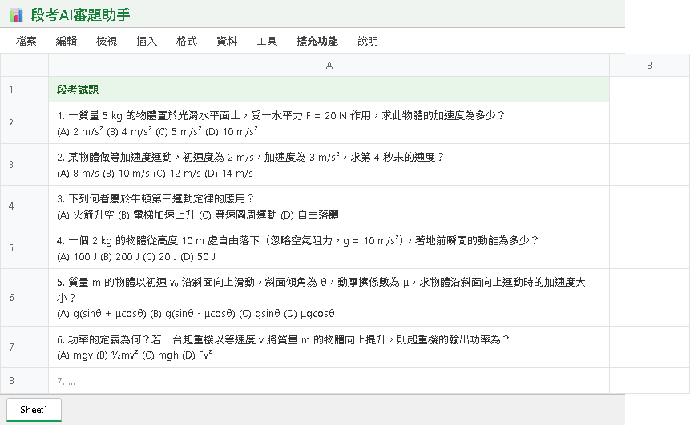
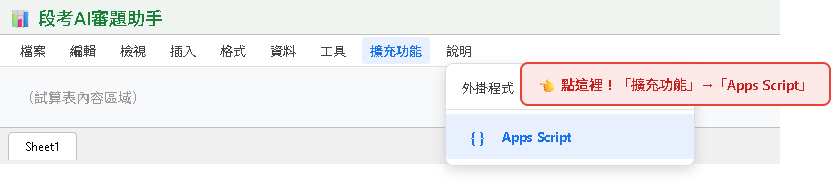
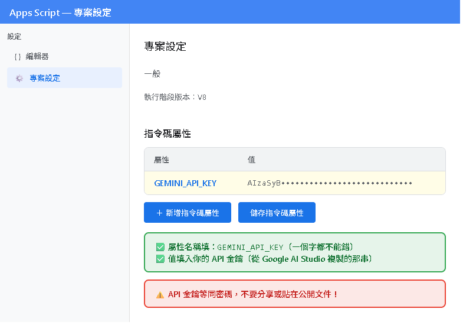
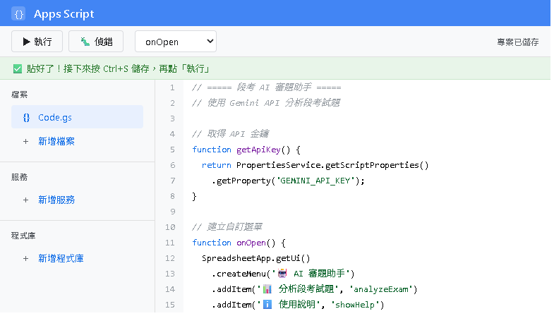
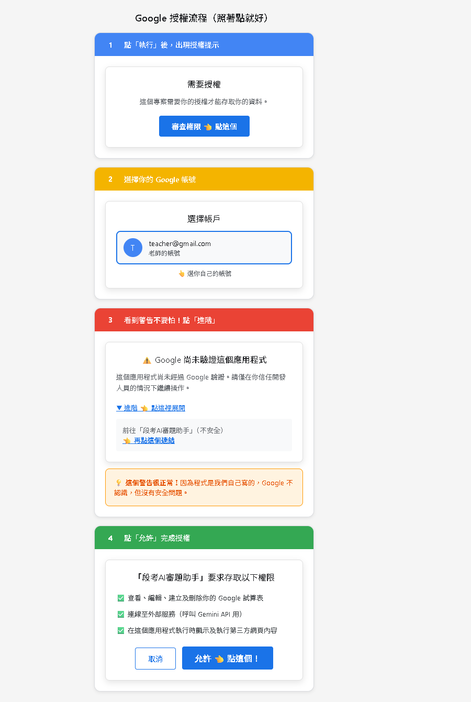
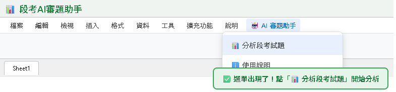
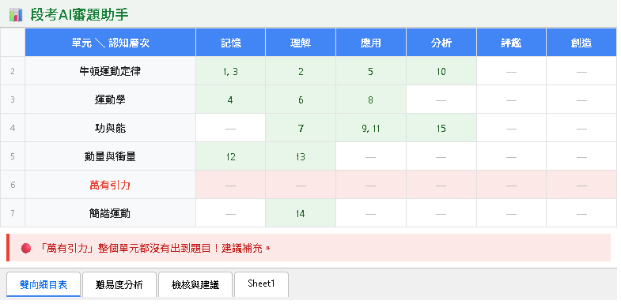
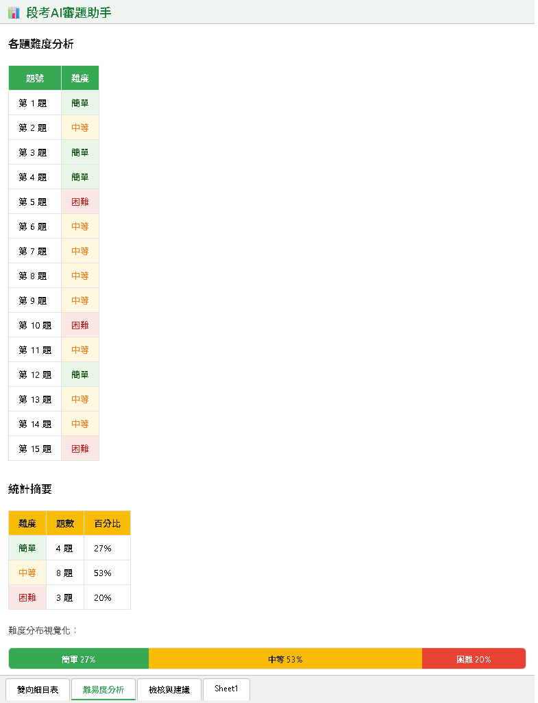
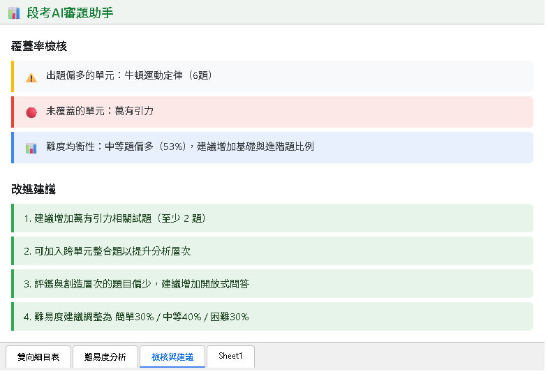

為什麼差異化教學要從「動機」開始？
🎓 自我決定理論（SDT）
三大心理需求：勝任感、自主性、關係
🛠️ 段考 AI 審題助手實作
貼上段考題 → AI 自動產出雙向細目表
✍️ Prompt 設計技巧
角色設定、結構化輸出、明確項目
📥 程式碼下載：工具1_段考AI審題助手.js
動機理論告訴我們，學生願意學的關鍵在於三件事：
我做得到！
我可以選！
有人在乎！
by Deci & Ryan ── 人類心理的三大基本需求
「我想做！」
例：因為喜歡畫畫而畫
最持久「我不做會不安」
例：不寫作業會良心不安
次持久「做了有獎勵」
例：加分、糖果、獎狀
短暫「不做會被處罰」
例：不寫要罰站、扣分
最短暫| 原本 | 只有一種作業形式 → 寫兩頁報告 |
| 改為 | 加上一個「更難」的選項 → 寫報告 + 錄口頭說明 |
| 效果 | 學生「選擇」只寫報告 → 覺得輕鬆 → 動機提升 |
| 心理需求 | 差異化教學策略 | AI 工具 | 學生內心感受 |
|---|---|---|---|
| 💪 勝任感 | 題目難度分層、雙向細目表檢核 | 段考 AI 審題助手 | 「我準備的有出到！」 |
| 💪 勝任感 | 教材難度調整、在地化情境 | AI 改廠商簡報 | 「老師講的我聽得懂！」 |
| 💪 勝任感 | 動態提示、邊做邊學 | 動態評量產生器 | 「我也可以得分！」 |
| 🎯 自主性 | 多元評量形式 | Gemini 產 Rubric | 「我可以用擅長的方式！」 |
| 💬 關係 | 個人化回饋、AI 逐項評語 | AI 學生回饋系統 | 「老師有認真看我的作品！」 |
問題情境：老師，你有聽過這些話嗎？
單元 × 認知層次（記憶、理解、應用、分析、評鑑、創造），每格填入對應題號
每題標註簡單 / 中等 / 困難，自動計算百分比統計
覆蓋率檢查、弱點標記、具體改進建議清單


myFunction 程式碼（全選刪除即可）
GEMINI_API_KEY你的 API 金鑰




自動產生「單元 × 認知層次」矩陣，每格填入對應題號
哪些單元考最多、哪些太少
完全沒出題的單元！
記憶、理解、應用
分析、評鑑、創造

每題標註難度 + 統計百分比 + 視覺化長條圖
27%
建議 30%
53%
建議 50%
20%
建議 20%

AI 整合分析，給出具體改進建議

好的 Prompt = 好的 AI 輸出。掌握這四個關鍵：
「你是一位嚴謹的高中物理教師」
→ 讓 AI 用專業視角分析試題
要求回傳 JSON 格式
→ 程式可自動解析並填入表格
列出需要分析的 4 大項目
→ 避免 AI 遺漏或答非所問
設為 0.2（穩定模式）
→ 每次分析結果一致、可重複
複製以下提示詞，貼到 Gemini / ChatGPT / Claude，即可取得完整的 Google Apps Script 程式碼：
請幫我寫一個 Google Apps Script（GAS），功能是「段考 AI 審題助手」。
需求：
1. 在 Google Sheets 中建立自訂選單「🤖 AI 審題助手」
2. 使用者在 Sheet1 的 A 欄貼上段考題目（含題號和選項）
3. 點選單後，程式讀取 A 欄內容，呼叫 Gemini API（模型：gemini-2.5-flash）進行分析
4. API Key 存在「指令碼屬性」中，名稱為 GEMINI_API_KEY
分析內容（要求 AI 以 JSON 格式回傳）：
- 雙向細目表：每題對應的「單元」和「認知層次」（記憶/理解/應用/分析/評鑑/創造）
- 難易度分析：每題的難度（簡單/中等/困難）+ 統計百分比
- 檢核與建議：未覆蓋的單元、出題偏重、難度均衡性、改進建議
輸出：自動建立三個工作表（雙向細目表、難易度分析、檢核與建議），並格式化表格
技術要求：
- temperature 設為 0.2（穩定分析）
- 使用 UrlFetchApp.fetch 呼叫 Gemini API
- 包含錯誤處理和使用者提示對話框
- Prompt 中設定角色為「嚴謹的高中教師」完成後，我們將進入 Part 2：教材差異化 ── AI 改廠商簡報